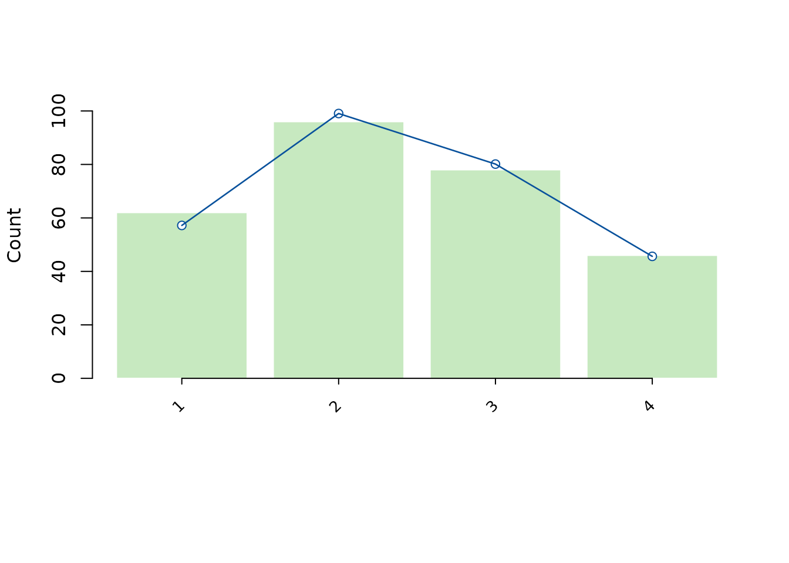

A useful report explains the question, why the scoring design and
model can answer it, what the results show, and how far the answer
applies. This guide connects those steps to actual mfrmr
tables and figures. The Manuscript
coverage map also identifies information that the researcher must
provide outside the fitted model.
For a literature-based comparison with FACETS/ConQuest and actual L2 speaking/writing papers, see connect designs, networks and reports. That lesson also distinguishes the analysis units of MFRM and G/D studies.
Choose report sections by question
A report needs a common core: the question, rating unit and assignment, rubric endpoints/direction, retained sample, method and scale, uncertainty, and the substantive answer. Add the sections below when they answer that question. An unrequested analysis is not a reporting defect, and a longer coefficient list is not stronger evidence.
| When this is your question | Report these outputs together | Existing route |
|---|---|---|
| Can the model distinguish people or facet levels, and where does it misfit? | Estimates/intervals, Separation, Strata, model or fit-adjusted Reliability, fit basis, Wright map and relevant category curves |
diagnose_mfrm() → mfrm_results() →
mfrm_report(); this lesson below |
| Do two named raters agree on the same responses? | Exact/adjacent agreement when useful, Cohen’s kappa with declared unweighted/linear/quadratic weights, common-unit counts and exclusions |
pairwise_kappa_table(); agreement lesson. Several raters
produce separate pair results, not a single panel kappa. |
| How much observed agreement does the panel show? | Krippendorff’s alpha with its distance and pairable units, or a justified alternative such as Gwet AC2 |
krippendorff_alpha_table() /
gwet_ac2_table(). Choose the chance/distance model before
interpreting the coefficient. |
| How reproducible are numeric ratings under the specified rater model? | The stated ICC definition, single/average-score target, consistency/absolute-agreement target and analyzed sample |
pairwise_icc_table() and its help. An ICC is not
interchangeable with separation reliability, alpha or kappa. |
| Which future assessment plan suits the intended score? | G-study variance/covariance components; D-study G/Phi/SEM, score weights, count grid, uncertainty and eligible paired contrasts |
G/D-study
reporting structure,
mfrm_report(g/d, intervals = saved_ci) →
build_summary_table_bundle(); plot(g/d) and
the editable G/D template |
| Can scores be compared across forms or waves? | Anchor source, values, scale/direction, centering, overlap, invariance assumption, drift and uncertainty basis |
Linking workflow,
review_mfrm_anchors() → anchored fit /
build_linking_review() →
build_summary_table_bundle()
|
| Does a particular combination or group need investigation? | Signed bias/DFF contrast, cell evidence, reference group, multiplicity, uncertainty and follow-up | Specified estimate_bias() / analyze_dff()
→ plot() / tables. Supply matching bias results to
reporting_checklist() and build_apa_outputs();
dif_report() serves DFF. |
| Does a model choice change the answer? | Comparison basis, AIC/BIC where comparable, eligible LRT, numerical checks and changes in the target estimates/conclusion |
compare_mfrm() →
build_model_choice_review() →
build_summary_table_bundle(); model
choice
|
| What unexplained structure or grouping merits follow-up? | Node/feature definition, residual versus observed-score basis, overlap, missingness, selection choices and exploratory stability | Visual diagnostics and feature groups; keep exploration separate from confirmation |
Separation describes spread relative to error; Strata transforms separation; Reliability expresses another ratio of the same underlying variance estimates. They are useful companion summaries, not three independent confirmations. Kappa and alpha instead concern observed agreement. Report both only when the pairwise and panel questions both matter. Select comparable criteria/occasions and name the pooling rule; a single pooled coefficient can hide differences among criteria. Never fill missing overlap with zero agreement.
The ordinary report already has fit, precision, bias and linking
wording tables. include = "bias" supplies a facet screen,
not a newly selected Rater-by-Criterion interaction;
include = "linking" does not create evidence from other
waves. Supply the targeted analyses through their supported routes.
Observed alpha/kappa and external-feature groups remain separate result
objects. G/D studies and residual networks now enter
mfrm_report() directly and retain their own estimands and
reporting tables. The editable GPCM example below joins one particular
set of these outputs; it is not an automatic report for all package
functions.
For assessment planning, copy and render
system.file("templates", "gtheory-report.Rmd", package = "mfrmr").
See the G/D-study
route for source-checked saved intervals and full CSV/HTML
exports.
For selected anchor, bias and model-choice
questions, copy
system.file("templates", "assessment-review.Rmd", package = "mfrmr").
Its switches run only the requested modules. The template starts from
bundled ratings, retains all bias cells and anchor values, and exports
each report with a complete saved analysis. These objects now enter
mfrm_report() directly; reporting does not recalculate
estimates or test missing evidence.
Keep the study’s score meaning with each report:
context <- c(rating_unit = "One performance by judge by criterion rating",
score_direction = "Higher Comprehensibility means harder to understand",
rubric = "1 = very easy; 9 = very difficult", transformation = "None")
report <- mfrm_report(results, study_context = context)
report$tables$study_contextThe declaration is copied into the object, HTML/Markdown and appendix tables; it does not recode the data or reverse a parameter’s sign. Reuse it across measurement, planning and feedback only when the units and meanings match. Record differences in aggregation, scale and anchor origin explicitly. The model cannot validate the meaning of these author-supplied declarations.
Start with an editable GPCM report
For a one-family GPCM MML analysis, the package includes a complete R Markdown starting point. It fits the bundled synthetic ratings and produces an HTML report, CSV tables, two PNG figures and a saved analysis:
template <- system.file("templates", "gpcm-report.Rmd", package = "mfrmr")
file.copy(template, "gpcm-report.Rmd")
rmarkdown::render("gpcm-report.Rmd")
# Then use your own data: Person, Rater, Criterion, Score; one rating per cell.
rmarkdown::render("gpcm-report.Rmd", params = list(
ratings_csv = "ratings.csv", rating_min = 1, rating_max = 4,
output_dir = "my-gpcm-report-files"
))Edit the model and study-context sections for your assessment. The
template uses criterion-specific steps and slopes; it is not a
two-family GPCM or JML template. Repeated occasions require an explicit
measurement unit and matching agreement keys. The default output folder
is gpcm-report-files.
| What you want to report | Where it comes from | Key distinction |
|---|---|---|
| Separation, Strata, Reliability | diagnose_mfrm(fit)$reliability |
Separation-based precision, with its recorded SE basis and eligibility; not observed agreement. |
| Infit/Outfit and ZSTD | diagnose_mfrm(fit)$fit |
Native MML EAP plug-in fit; not TAM/ConQuest posterior-averaged fit. |
| Wright map | plot(fit, diagnostics = diagnostics) |
Locations and targeting; the template deliberately draws points without implying qualified intervals. |
| Category-probability curves |
plot(fit, type = "ccc");
category_curves_report(fit)
|
Conditional reference profiles; retain their step/slope owners and reference settings. |
| Krippendorff’s alpha |
krippendorff_alpha_table() on the ratings |
A separate observed-agreement calculation.
mfrm_report() does not automatically add it. |
| Draft Methods/Results and reporting gaps |
mfrm_report(..., style = "apa"),
build_apa_outputs(),
reporting_checklist()
|
Draft text and evidence tracking; recruitment, design justification and the substantive answer still come from the researcher. |
These outputs can support a paper, but their presence does not qualify every claim. In particular, a converged one-family GPCM can retain incomplete identification/boundary evidence and review-only precision summaries. Read the fit decision and any target-specific interval result; do not interpret missing intervals or formal-inference eligibility as established by a report preset. The template retains these states and separates model precision from alpha.
It asks a panel-level agreement question, which explains its alpha
section. Separation is already included. For a specified rater-pair
question, add pairwise_kappa_table() with explicit weights
and the same matched rating units; the template includes an optional
code example. The synthetic rating design has six raters but only six of
the fifteen possible pairs share units. The remaining nine pair
coefficients are unavailable, not zero. This is a reason to show the
assignment/overlap evidence alongside agreement, not to substitute
model-adjusted severity for missing pairwise observations.
The worked lesson below develops the reporting logic in more detail using RSM.
The running question is: after accounting for person ability
and criterion difficulty, how much do the raters differ in
severity? The synthetic data illustrate the reporting workflow;
they are not evidence about a real assessment or population. For loading
your own CSV, see
vignette("mfrmr-workflow", package = "mfrmr").
1. Fit once and retain the analysis record
# Load the package and synthetic ratings
library(mfrmr)
toy <- load_mfrmr_data("example_operational")
head(toy)
#> Study Person Rater Criterion Score Group
#> 1 OperationalExample P001 R01 Language 4 A
#> 2 OperationalExample P001 R01 Organization 2 A
#> 3 OperationalExample P001 R02 Content 4 A
#> 4 OperationalExample P001 R02 Language 3 A
#> 5 OperationalExample P001 R02 Organization 2 A
#> 6 OperationalExample P002 R01 Content 3 A
# Estimate person ability, rater severity, and criterion difficulty
fit <- fit_mfrm(
data = toy,
person = "Person",
facets = c("Rater", "Criterion"),
score = "Score",
method = "MML",
model = "RSM"
)
# Reuse these diagnostics in the tables and report below
diag <- diagnose_mfrm(fit, diagnostic_mode = "both", residual_pca = "none")
results <- summary(fit, diagnostics = diag)One row is one rating. The rubric uses 1 to 4, and
all four categories occur. The example has 48 persons, six raters, and
three criteria, with 282 observed ratings. Here N is the
number of rating rows, not the number of independent participants.
Repeated ratings from the same person share that person’s latent ability
in the model.
MML means marginal maximum likelihood; RSM is a rating-scale model with shared category thresholds. In this default fit, the person distribution is fixed to standard normal, person scores are expected a posteriori (EAP) estimates, and rater and criterion effects are fixed parameters centered within each facet. Higher rater estimates mean stricter ratings, in logits. In a real study, explain why this population assumption and shared-threshold rubric match the question. Record any different estimator, constraints, anchors, weights, interactions, or score orientation.
results$overview[, c("Model", "Method", "N", "Persons", "Converged")]
#> # A tibble: 1 × 5
#> Model Method N Persons Converged
#> <chr> <chr> <dbl> <int> <lgl>
#> 1 RSM MML 282 48 TRUE
results$settings_overview[, c(
"QuadPoints", "RatingMin", "RatingMax", "RatingRangeSource", "NoncenterFacet"
)]
#> # A tibble: 1 × 5
#> QuadPoints RatingMin RatingMax RatingRangeSource NoncenterFacet
#> <int> <dbl> <dbl> <chr> <chr>
#> 1 31 1 4 observed Person
results$row_retention
#> Stage Rows DroppedRows
#> 1 input_selected_columns 282 0
#> 2 after_missing_and_weight_filter 282 0
#> DroppedReason
#> 1
#> 2 missing values or non-positive weights
results$decision
#> Interpretation FormalInference FitReadiness
#> 1 Ready for formal inference Yes ready
#> Why
#> 1 All stored fit-readiness components passed.
#> NextAction
#> 1 After reviewing convergence, run `review <- summary(fit, profile = "facets", detail = "brief")` for the comprehensive measurement review; FACETS software is not required.
# Record the iteration limit, integration grid, and numerical stopping details
spec <- specifications_report(fit)
spec$convergence_control
#> Setting Value
#> 1 MaxIterations 400
#> 2 RelativeTolerance 1e-09
#> 3 QuadPoints 31
#> 4 OptimizerCodeZero TRUE
#> 5 InferenceReady TRUE
#> 6 ConvergenceSeverity pass
#> 7 FunctionEvaluations 7
#> 8 OptimizerMessage CONVERGENCE: REL_REDUCTION_OF_F <= FACTR*EPSMCH
results$overview[, c("OptimizerMethod", "ConvergenceStatus", "RequestedReltol", "EffectiveReltol")]
#> # A tibble: 1 × 4
#> OptimizerMethod ConvergenceStatus RequestedReltol EffectiveReltol
#> <chr> <chr> <dbl> <dbl>
#> 1 L-BFGS-B converged 0.000000001 1e-13The default numerical integration uses 31 quadrature points. Retain
the analysis script and recorded controls with the results; convergence
alone does not establish numerical stability or model adequacy. If the
conclusions hinge on a close model comparison, use
mml_quadrature_sensitivity() with a prespecified denser
common grid and report whether the conclusion changes.
Show what was planned, observed, and excluded
data("mfrmr_example_operational_design", package = "mfrmr")
data_review <- describe_mfrm_data(
data = toy,
person = "Person",
facets = c("Rater", "Criterion"),
score = "Score",
rating_min = 1,
rating_max = 4,
keep_original = TRUE,
expected_design = mfrmr_example_operational_design
)
data_summary <- summary(data_review)
data_summary$missing
#> Column Missing
#> 1 Criterion 0
#> 2 Person 0
#> 3 Rater 0
#> 4 Score 0
data_summary$structural_missingness
#> Status ExpectedCells ObservedCells MatchedCells MissingExpectedCells
#> 1 declared 288 282 282 6
#> UnexpectedObservedCells CoverageRate ExpectedOnlyPersons UnexpectedPersons
#> 1 0 0.9791667 0 0
data_summary$design_connectivity
#> Basis Facet PersonNodes FacetLevelNodes Edges Components
#> 1 observed Rater 48 6 96 1
#> 2 observed Criterion 48 3 144 1
#> 3 declared_expected Rater 48 6 96 1
#> 4 declared_expected Criterion 48 3 144 1
#> LargestComponentPersons LargestComponentLevels LargestComponentPercent
#> 1 48 6 100
#> 2 48 3 100
#> 3 48 6 100
#> 4 48 3 100
#> Connected
#> 1 TRUE
#> 2 TRUE
#> 3 TRUE
#> 4 TRUE
# Describe the scores and the amount of rating evidence
data_summary$score_distribution
#> Score RawN WeightedN Percent
#> 1 1 62 62 21.98582
#> 2 2 96 96 34.04255
#> 3 3 78 78 27.65957
#> 4 4 46 46 16.31206
data_summary$facet_overview
#> Facet Levels TotalWeightedN MeanWeightedN MinWeightedN MaxWeightedN
#> 1 Criterion 3 282 94 94 94
#> 2 Rater 6 282 47 38 56
data.frame(MeanScore = mean(toy$Score), SDScore = sd(toy$Score))
#> MeanScore SDScore
#> 1 2.382979 1.002911
table(table(toy$Person)) # Number of persons with each observed rating count
#>
#> 5 6
#> 6 42
as.data.frame(results$person_overview[, c(
"Persons", "DistributionN", "ReviewExcludedExtremeEAPs", "Mean", "SD", "MeanPosteriorSD"
)])
#> Persons DistributionN ReviewExcludedExtremeEAPs Mean SD
#> 1 48 48 0 -0.1554342 0.8236778
#> MeanPosteriorSD
#> 1 0.47615The supplied roster contains 288 planned rating cells, of which six
are absent. All 282 input rows are retained in fitting. These are
different counts: absent planned ratings are not rows discarded by
fit_mfrm(). Report the assignment scheme, overlap,
exclusions, and reasons for missing ratings. Without a roster, do not
label every unobserved person-by-rater combination as a missing planned
rating. A connected design is relevant to comparability, but does not
establish anchor invariance or sufficient precision.
These counts describe different units. In the example, 42 persons have six ratings and six have five; rater workloads range from 38 to 56 rating rows. For repeated testing, state whether a person ID identifies a person, a response, or an occasion, and how dependence across occasions is handled. Preserve the original rubric, any scoring exceptions, and the exact recoding rule. Such details affect what the model can answer: Goodwin (2016, Sections 3–4 and Table 1) documents score-use contexts, rating history, exclusions, and category recoding before reporting rater differences.
State which persons enter distribution summaries. Eckes (2005, Tables
1–2) marks summaries restricted to nonextreme examinees. In this example
the person summary includes all 48 persons. SD describes
variation across person EAP estimates; MeanPosteriorSD
describes their average within-person uncertainty. They are not
interchangeable, and neither is a rater or criterion SE.
2. Check uncertainty and fit before writing the answer
prec <- precision_review_report(fit, diagnostics = diag)
prec$profile[, c(
"PrecisionTier", "SupportsFormalInference", "PersonSEBasis", "NonPersonSEBasis"
)]
#> PrecisionTier SupportsFormalInference PersonSEBasis
#> 1 model_based TRUE Posterior SD (EAP)
#> NonPersonSEBasis
#> 1 Observed information (MML)
prec$checks
#> Check Status
#> 1 Precision tier pass
#> 2 Optimizer convergence pass
#> 3 ModelSE availability pass
#> 4 Fit-adjusted SE ordering pass
#> 5 Reliability ordering pass
#> 6 Facet precision coverage pass
#> 7 SE source labels pass
#> Detail
#> 1 Uncertainty is conditional on the fitted model. Person posterior SDs condition on the fitted calibration; facet standard errors use observed information. Review interval assumptions before reporting.
#> 2 Numerical convergence checks passed; this alone does not establish valid SEs or intervals.
#> 3 Finite standard errors were available for 100.0% of non-fixed rows.
#> 4 Among available pairs, fit-adjusted SEs were at least as large as their unadjusted values.
#> 5 Among available pairs, fit-adjusted reliability values were not larger than the model-based values.
#> 6 Each facet had sample/population summaries for both model and fit-adjusted SE modes.
#> 7 Person uncertainty uses posterior SDs; facet uncertainty uses observed information.
# These diagnostics address departures from the fitted response model
diag_summary <- summary(diag)
diag_summary$overall_fit
#> # A tibble: 1 × 22
#> Infit Outfit InfitZSTD OutfitZSTD DF_Infit DF_Outfit DF_Infit_FACETS
#> <dbl> <dbl> <dbl> <dbl> <dbl> <dbl> <dbl>
#> 1 0.866 0.857 -1.85 -1.91 353. 334. 353.
#> # ℹ 15 more variables: DF_Outfit_FACETS <dbl>, FitResponseRows <int>,
#> # FitAvailableRows <int>, FitUnavailableRows <int>, FitStatus <chr>,
#> # FitReason <chr>, DF_Infit_ENGINE <dbl>, DF_Outfit_ENGINE <dbl>,
#> # InfitZSTD_ENGINE <dbl>, OutfitZSTD_ENGINE <dbl>, InfitZSTD_FACETS <dbl>,
#> # OutfitZSTD_FACETS <dbl>, FitDfMethod <chr>, FitZSTDTransform <chr>,
#> # FitZSTDCap <dbl>
diag_summary$diagnostic_basis[, c("DiagnosticPath", "Status", "ReportingUse")]
#> # A tibble: 4 × 3
#> DiagnosticPath Status ReportingUse
#> <chr> <chr> <chr>
#> 1 legacy_residual_fit computed legacy_compatibility_screen
#> 2 strict_marginal_fit computed screening_only
#> 3 strict_pairwise_local_dependence computed screening_only
#> 4 posterior_predictive_follow_up not_available screening_onlyRead results$decision, including Why and
NextAction, together with these checks. A
model_based precision tier describes the uncertainty
calculation; it does not by itself justify every inferential claim.
Retain restrictions reported for the fit, design, or particular
statistic. For this fit, person uncertainty is posterior SD and
non-person SEs use observed information.
Infit and Outfit have a reference value of 1 and summarize departures
from the model. Report the statistics and the source and purpose of any
review cutoff; a flag is not an automatic exclusion rule. Global fit can
hide local problems. The default diagnostic_mode = "both"
retains residual/EAP diagnostics and latent-integrated marginal screens.
Their reference bases differ; inspect
prec$fit_separation_basis before describing MnSq, ZSTD,
separation, or reliability as if they were a single adequacy test.
When reporting the frequency of large residuals, state the rule and denominator. For example, Eckes (2005, p. 204) reports counts at two absolute standardized- residual cutoffs. The following shows those descriptive counts for the current EAP-residual path:
z <- diag$obs$StdResidual
residual_counts <- data.frame(
AbsoluteZCutoff = c(2, 3),
Evaluated = sum(is.finite(z)),
Unavailable = sum(!is.finite(z)),
Flagged = c(sum(abs(z[is.finite(z)]) >= 2),
sum(abs(z[is.finite(z)]) >= 3))
)
residual_counts$Percent <- 100 * residual_counts$Flagged / residual_counts$Evaluated
residual_counts
#> AbsoluteZCutoff Evaluated Unavailable Flagged Percent
#> 1 2 282 0 7 2.4822695
#> 2 3 282 0 1 0.3546099Use the residual basis appropriate to your analysis. These are
descriptive tail counts, not a calibrated global test or a universal
rule that a certain percentage establishes fit. The observed-category
probability screen in unexpected_response_table() is an
additional rule unless explicitly disabled; its default count is not the
same as counting only abs(StdResidual) >= 2.
Keep the marginal screening results visible alongside those counts:
diag_summary$marginal_fit[, c(
"OverallRMSD", "StepGroupsFlagged", "FacetLevelsFlagged",
"PairwiseFlaggedLevelPairs", "ReportingUse"
)]
#> # A tibble: 1 × 5
#> OverallRMSD StepGroupsFlagged FacetLevelsFlagged PairwiseFlaggedLevelPairs
#> <dbl> <int> <int> <int>
#> 1 0.00624 0 1 1
#> # ℹ 1 more variable: ReportingUse <chr>
diag$marginal_fit$thresholds
#> $abs_z_warn
#> [1] 2
#>
#> $rmsd_warn
#> [1] 0.05
diag$marginal_fit$pairwise$thresholds
#> $abs_z_warn
#> [1] 2
#>
#> $exact_gap_warn
#> [1] 0.1
#>
#> $adjacent_gap_warn
#> [1] 0.1
subset(diag$marginal_fit$facet_level$summary_stats, Flagged,
c("Facet", "Level", "GroupCount", "RMSD", "MaxAbsStdResidual"))
#> # A tibble: 1 × 5
#> Facet Level GroupCount RMSD MaxAbsStdResidual
#> <chr> <chr> <dbl> <dbl> <dbl>
#> 1 Rater R06 38 0.0512 1.09
subset(diag$marginal_fit$pairwise$pair_stats, Flagged,
c("Facet", "Level1", "Level2", "LevelPairCount", "ExactAgreement", "ExpectedExactAgreement"))
#> # A tibble: 1 × 6
#> Facet Level1 Level2 LevelPairCount ExactAgreement ExpectedExactAgreement
#> <chr> <chr> <chr> <int> <dbl> <dbl>
#> 1 Rater R04 R05 23 0.609 0.398The package’s default marginal rules use an absolute
standardized-residual cutoff of 2 or a root-mean-square proportion
discrepancy of 0.05; pairwise screens also use an exact/adjacent
agreement-gap cutoff of 0.10. Record the rules used in your run and
inspect flagged groups with plot() and plot().
These remain screening results; an acceptable overall average does not
resolve local warnings.
3. Show estimates, uncertainty, and the answer
measurements <- fit_measures_table(fit, diagnostics = diag, ci_level = 0.95)
rater_table <- subset(
measurements$table, Facet == "Rater",
c("Level", "N", "Measure", "SE", "CI_Lower", "CI_Upper", "Infit", "Outfit")
)
rater_table <- rater_table[order(rater_table$Measure), ]
rater_apa <- apa_table(
rater_table,
digits = 3,
caption = "Rater severity and fit in the synthetic MML/RSM example",
note = paste(
"282 ratings of 48 persons by six raters on three criteria using a 1-4 rubric.",
"N counts rating rows. Measures and SEs are in logits; higher values mean stricter ratings.",
"Intervals are 95% normal approximations from observed-information SEs.",
"Rater effects are centered within facet. Infit and Outfit have reference value 1."
)
)
rater_apa
#> Rater severity and fit in the synthetic MML/RSM example
#> Level N Measure SE CI_Lower CI_Upper Infit Outfit
#> R01 47 -0.606 0.224 -1.046 -0.166 0.772 0.757
#> R02 56 -0.382 0.209 -0.791 0.027 0.954 1.015
#> R04 47 0.180 0.223 -0.256 0.616 0.917 0.891
#> R05 44 0.184 0.234 -0.275 0.643 0.648 0.640
#> R03 50 0.212 0.217 -0.212 0.637 1.011 0.981
#> R06 38 0.412 0.249 -0.077 0.901 0.820 0.798
#> Note. 282 ratings of 48 persons by six raters on three criteria using a 1-4 rubric. N counts rating rows. Measures and SEs are in logits; higher values mean stricter ratings. Intervals are 95% normal approximations from observed-information SEs. Rater effects are centered within facet. Infit and Outfit have reference value 1.
# Display the estimates on the common logit scale
plot(fit, diagnostics = diag, show_ci = TRUE)
Pass the same diag to the table and plot so their
intervals use the same SEs. Without diagnostics, Wright-map
intervals use exploratory observation-table SEs, which can differ from
the MML observed-information SEs reported here. Steps on this map are
point estimates; their uncertainty is reported in the separate threshold
table below.
apa_table() prints the table, caption, and note; its
$table member holds the data for further formatting.
digits rounds all numeric columns uniformly. Review
statistic-specific rounding, especially for p values and
intervals, and the target journal’s format before submission.
A worked explanation for this synthetic example is:
We asked how much raters differed in severity after accounting for person ability and criterion difficulty. The model includes those facets so that raw rater averages are not the only basis for comparison. Estimated rater severity ranged from -0.606 logits (R01; SE = 0.224, 95% CI [-1.046, -0.166]) to 0.412 logits (R06; SE = 0.249, 95% CI [-0.077, 0.901]), a span of about 1.018 logits. Thus, the fitted model describes R06 as stricter than R01 in these data. This span is descriptive: it is not an interval or a hypothesis test for the difference. The evidence does not establish why the raters differ or how much a particular examinee’s decision would change.
The intervals compare each centered rater effect with its reference; their overlap is not a pairwise test. A contrast needs uncertainty for that contrast, including covariance, and a multiplicity plan if several comparisons are made. Whether a difference matters in practice depends on the rubric, the score use, and any decision rule. Do not convert a logit span directly into rubric points or claim that severity differences prove biased or inconsistent scoring. For person tables, state the EAP/posterior-SD basis and the interval method explicitly; normal approximations are not posterior quantile intervals.
Keep separation, agreement, and category functioning distinct
apa_table(
diag_summary$reliability[, c("Facet", "Levels", "Separation", "Strata", "Reliability", "RealReliability")],
digits = 3,
caption = "Separation and reliability by facet",
note = "High Person separation reliability indicates distinguishable abilities; high rater separation reliability indicates distinguishable severities, not agreement. Low rater values can also reflect imprecision."
)
#> Warning: Unknown or uninitialised column: `config`.
#> Separation and reliability by facet
#> Facet Levels Separation Strata Reliability RealReliability
#> Criterion 3 2.555 3.740 0.867 0.866
#> Person 48 1.406 2.207 0.664 0.614
#> Rater 6 1.449 2.265 0.677 0.677
#> Note. High Person separation reliability indicates distinguishable abilities; high rater separation reliability indicates distinguishable severities, not agreement. Low rater values can also reflect imprecision.
agreement <- interrater_agreement_table(fit, diagnostics = diag)
agreement$summary[, c(
"OpportunityCount", "ExactAgreement", "ExpectedExactAgreement", "AdjacentAgreement"
)]
#> OpportunityCount ExactAgreement ExpectedExactAgreement AdjacentAgreement
#> 1 138 0.3913043 0.3507673 0.8550725A rater separation reliability describes how distinctly rater
locations are estimated relative to their errors; a high value indicates
distinguishable severities, not agreement. Low values can also reflect
imprecise estimates and do not establish agreement or equivalence.
Neither a high nor a low value tests every rater pair or quantifies the
practical size of severity differences. Person separation reliability
addresses differentiation among persons under its stated error basis.
Specify whether the model or misfit-adjusted
(RealReliability) index is reported, and the
replication/error sources relevant to the intended score use. These
coefficients do not describe every possible source of measurement
error.
Also identify the formula. In diag$reliability,
Reliability is the separation-based ratio
max(V - E, 0) / V, where V is the sample
variance of finite facet estimates and E is the mean
squared model SE over available SEs. The ratio is unavailable when
V is zero or unavailable. Separation is
sqrt(max(V - E, 0) / E) when defined, and
Strata is (4 * Separation + 1) / 3; they are
distinct indices, not observed groups. The underlying quantities are
available directly:
diag$reliability[, c("Facet", "Levels", "ObservedVariance", "ModelErrorVariance", "Reliability")]
#> # A tibble: 3 × 5
#> Facet Levels ObservedVariance ModelErrorVariance Reliability
#> <chr> <int> <dbl> <dbl> <dbl>
#> 1 Criterion 3 0.0915 0.0122 0.867
#> 2 Person 48 0.678 0.228 0.664
#> 3 Rater 6 0.159 0.0512 0.677This is not the posterior-variance EAP reliability reported by Xiao et al. (2026, Section 2.5, Equation 4), whose denominator combines the spread of EAP scores with posterior variances. Nor is it the squared correlation with known true abilities used in their simulation. Report the package’s coefficient under its own name and basis; numerical comparisons across papers require matching definitions and scoring designs. For example, this analysis’s person separation reliability is 0.664, not a TAM EAP-reliability estimate.
Here the observed exact agreement is 54/138 = 39.1% across available
paired ratings of the same person and criterion; adjacent agreement
(within one category) is 85.5%. ExpectedExactAgreement is
the fitted-model baseline (35.1% here), not an independent
chance-agreement correction. Report the opportunity count and overlap
pattern, not just a percentage. These are observed-score summaries; keep
them separate from the marginal diagnostic screens above. Use
agreement$pairs when differences among rater pairs
matter.
For observed QWK, ordinal Krippendorff alpha, Gwet AC2 or an aligned score-source comparison, follow Rating agreement and score comparisons. That tutorial shows the matching keys and sample audits, and distinguishes these chance-agreement definitions from the fitted-model expectation above.
scale <- rating_scale_table(fit, diagnostics = diag)
scale$category_table[, c("Category", "Count", "AvgMeasure", "ExpectedMeasure", "Infit", "Outfit")]
#> Category Count AvgMeasure ExpectedMeasure Infit Outfit
#> 1 1 62 -1.1301948 -0.9800341 1.5434694 1.3053867
#> 2 2 96 -0.3122625 -0.3542280 0.4933638 0.5214360
#> 3 3 78 0.3049905 0.2393630 0.3395566 0.3440066
#> 4 4 46 0.8317919 0.7442696 1.9416014 1.8255900
plot(scale)
scale$notes
#> [1] "Step owner: Common; selection: not_applicable."
#> [2] "A Step describes the transition between adjacent score categories, not a learning stage or a pass/fail cut. At the corresponding predictor value, the two categories have equal probability, not necessarily probability 0.5 each. Stored step offsets and full ability-axis crossings differ when other facet effects or interactions are included; check the reference profile and step owner."
#> [3] "Category counts are observed ratings, not independent Persons. Owner percentages use each owner's total weight; no-exposure percentages are unavailable."
#> [4] "An unobserved category does not establish structural absence. Review the rating plan and rubric before merging categories."
#> [5] "Step SEs describe the stored step offsets, not full ability-axis crossings, adjacent-step gaps or decision cuts. No additional covariance calculation is requested."
#> [6] "Legacy step uncertainty without full source identity is retained for review; inspect SE_Status, CIUse and UncertaintySourceStatus."AvgMeasure is the average oriented generating measure
among responses in each observed category; ExpectedMeasure
is its model expectation. Category residual mean squares are descriptive
and have no universal unit baseline.
Check the threshold owner and the denominator before interpreting sparse use:
scale$model_context
#> Model Method StepOwner StepSelection SlopeOwner StepScale
#> 1 RSM MML Common not_applicable centered_step_offset
scale$owner_category_table[, c(
"StepFacet", "CategoryLabel", "RawCount", "Count", "Percent", "UsageStatus"
)]
#> StepFacet CategoryLabel RawCount Count Percent UsageStatus
#> 1 Common 1 62 62 21.98582 observed
#> 2 Common 2 96 96 34.04255 observed
#> 3 Common 3 78 78 27.65957 observed
#> 4 Common 4 46 46 16.31206 observedThis RSM uses a single Common threshold family. For PCM,
StepOwner records the selected step_facet, and
StepFacet identifies each level of that facet. For example,
rater-owned PCM thresholds describe each rater’s category transitions;
criterion-owned thresholds describe each criterion’s transitions.
RawCount counts ratings and Count sums their
weights. The percentage denominator is the total weight within that
owner level, not the number of persons. Local zero counts remain visible
even if a category is used elsewhere. No-exposure percentages are
unavailable, and a zero count alone does not establish structural
absence.
The threshold table already includes uncertainty from the supplied diagnostics:
steps <- scale$threshold_table
steps[, c("StepFacet", "Step", "Estimate", "SE", "CI_Lower", "CI_Upper")]
#> StepFacet Step Estimate SE CI_Lower CI_Upper
#> 1 Common Step_1 -1.2229852 0.1689986 -1.5542163 -0.8917541
#> 2 Common Step_2 0.1634468 0.1670937 -0.1640509 0.4909445
#> 3 Common Step_3 1.0595384 0.1765225 0.7135606 1.4055163
steps[, c("StepFacet", "Step", "SE_Status", "CIEligible", "CIUse",
"UncertaintySourceStatus")]
#> StepFacet Step SE_Status CIEligible CIUse
#> 1 Common Step_1 ok TRUE primary_reporting
#> 2 Common Step_2 ok TRUE primary_reporting
#> 3 Common Step_3 ok TRUE primary_reporting
#> UncertaintySourceStatus
#> 1 source_verified
#> 2 source_verified
#> 3 source_verifiedStep_1, Step_2, and Step_3 are
the transitions 1–2, 2–3, and 3–4 here. The supplied diagnostics use MML
observed-information SEs and 95% normal intervals. Their estimates and
owner/step keys must match the fit. New diagnostics also record the
calibration identity; older diagnostics without that identity retain
their numbers with a review status. Source verification does not
establish interval coverage. Check availability and reporting status
before quoting intervals. Calling rating_scale_table(fit)
without diagnostics returns points and category counts without computing
covariance; its SEs are unavailable.
Retain StepFacet in PCM output and original category
labels when reporting recoded scores. A centered step offset is not the
full ability-axis crossing: that crossing also includes the applicable
facet locations. Its SE, and the SE of a difference between steps,
require the relevant covariance terms. Do not substitute a
criterion-location SE or an individual step SE. These distinctions
matter when preparing tables such as the criterion-specific thresholds
and SEs in Eckes (2005, Table 5).
The bars show observed category counts; the line shows fitted expected counts. Report category frequencies, threshold estimates and ordering, and any sparse or unused categories. Explain what the pattern means for the rubric. These checks can motivate rubric review; they do not automatically justify merging categories, changing scores, or claiming unidimensionality.
If the question concerns observed versus adjusted scores
Eckes (2005, Table 3) places observed scores, adjusted scores, logit measures, SEs, and rating counts together. State the adjustment reference when using a similar presentation. Here the reference is zero for the other facets:
fair <- fair_average_table(fit, diagnostics = diag, reference = "zero")
person_scores <- fair$raw_by_facet$Person
person_scores <- person_scores[order(person_scores$Level), ]
head(person_scores[, c(
"Level", "TotalCount", "ObservedAverage", "FairZ", "Measure", "ModelSE"
)], 6)
#> # A tibble: 6 × 6
#> Level TotalCount ObservedAverage FairZ Measure ModelSE
#> <chr> <int> <dbl> <dbl> <dbl> <dbl>
#> 1 P001 5 3 2.68 0.284 0.486
#> 2 P002 6 3.33 2.95 0.661 0.484
#> 3 P003 6 2.83 2.49 0.0218 0.446
#> 4 P004 6 3 2.63 0.224 0.454
#> 5 P005 6 2.67 2.34 -0.175 0.442
#> 6 P006 5 3.4 2.96 0.677 0.526These are the first six person IDs, selected for illustration.
FairZ is an expected score on the fitted 1–4 scale, at the
person’s estimated ability with the other facet references set to zero.
It is not a z-score. ModelSE here is the posterior SD of
person ability in logits, not the SE of FairZ. The RSM/PCM
fair_average_table() does not supply fair-score SEs. Its
mean-reference alternative, FairM, uses mean other-facet
measures; for non-person rows that also includes the mean person
measure. Neither averages over the actual assignment distribution.
A score-use claim needs the decision thresholds, rounding rule, reference environment, uncertainty treatment, and full-sample counts of changed decisions. The six-row preview is not that analysis. Statistical adjustment alone does not establish fairness or authorize replacing operational scores.
If the score will determine pass or fail
An additional score-use question is: under a specified future rating plan, how often would the scoring rule misclassify a person, and how precise is measurement near the cut? For this illustration, every person receives six ratings from two named raters across the three criteria. The true pass cut is 0 logits; the operational sum rule passes sums of at least 9. The sum uses category indices 0–3, so 9 corresponds to an original 1–4 score sum of 15 for six complete ratings. These are illustrative decisions, not recommended cuts or cuts inferred from the fitted data.
decision_plan <- expand.grid(
Rater = sort(unique(as.character(toy$Rater)))[1:2],
Criterion = sort(unique(as.character(toy$Criterion))),
stringsAsFactors = FALSE
)
decisions <- classification_table(
fit, rating_plan = decision_plan,
cut_scores = c(Pass = 0), score_cuts = 9, operational_cuts = 0,
theta = c(-1, -0.25, 0, 0.25, 1),
theta_weights = c(0.10, 0.20, 0.30, 0.25, 0.15)
)
decisions$cuts
#> Cut TrueCut OperationalAbilityCut ScoreCut ExpectedSumAtTrueCut
#> Pass Pass 0 0 9 10.95574
#> InformationAtTrueCut SEMAtTrueCut ExpectedSumAtOperationalCut
#> Pass 4.229732 0.486232 10.95574
#> InformationAtOperationalCut SEMAtOperationalCut SourceStatus
#> Pass 4.229732 0.486232 ready
decisions$table[, c("Theta", "Method", "Accuracy", "Consistency", "SEM", "Status", "SourceStatus")]
#> Theta Method Accuracy Consistency SEM Status SourceStatus
#> 1 -1.00 lee_sum 0.8170068 0.7009866 0.5032836 available ready
#> 2 -1.00 rudner_normal 0.9765361 0.9541733 0.5032836 available ready
#> 3 -0.25 lee_sum 0.2533883 0.6216346 0.4802164 available ready
#> 4 -0.25 rudner_normal 0.6986768 0.5789450 0.4802164 available ready
#> 5 0.00 lee_sum 0.8832041 0.7936907 0.4862320 available ready
#> 6 0.00 rudner_normal 0.5000000 0.5000000 0.4862320 available ready
#> 7 0.25 lee_sum 0.9567888 0.9173121 0.5000073 available ready
#> 8 0.25 rudner_normal 0.6914599 0.5733138 0.5000073 available ready
#> 9 1.00 lee_sum 0.9993737 0.9987482 0.5943384 available ready
#> 10 1.00 rudner_normal 0.9537682 0.9118112 0.5943384 available ready
decisions$marginal
#> Method Accuracy Consistency Overclassification Underclassification
#> 1 lee_sum 0.7864428 0.8116731 0.16762165 0.04593551
#> 2 rudner_normal 0.7033192 0.6413064 0.06261103 0.23406979
#> Status SourceStatus
#> 1 available ready
#> 2 available readyThe five ability points and their masses define an explicitly hypothetical discrete population. They are not fitted EAP scores or a continuous-normal quadrature rule. Equality enters the higher category: the mass at 0 belongs to the true-pass group. Thus the true-fail and true-pass proportions are 0.30 and 0.70. Without supplied population weights, the function returns conditional results but does not invent a population average.
lee_sum calculates the finite summed-score distribution
for the stated sum rule. rudner_normal approximates
decisions based on an ML ability estimate and its stated ability cut.
Those operational rules need not agree; the expected sum at 0 in
$cuts is a diagnostic, not an instruction to round a cut.
Do not rank the two methods’ accuracy without first establishing a
common decision rule. The normal approximation can be poor for short
plans or extreme abilities. Neither route evaluates the earlier EAP
scoring rule.
SEMAtTrueCut and the nearby SEM values are
in ability logits, conditional on this calibration and locally
independent ratings. They exclude uncertainty in estimated facet/step
parameters and are not posterior SDs. Consistency concerns two
conditionally independent repetitions of the same fixed plan; it does
not generalize to different raters, retake policies or random tasks.
This API supports ordinary RSM/PCM; two-family GMFRM is outside its
scope.
Report an error’s denominator as part of its name. For a binary
decision, Overclassification in $marginal is
the population joint probability of false pass, and
Underclassification is that of false fail. The joint matrix
allows three different, useful descriptions of each error:
error_rates <- do.call(rbind, lapply(
split(decisions$classification_matrix, decisions$classification_matrix$Method),
function(d) {
false_pass <- sum(d$Probability[d$TrueCategory == 1 & d$ObservedCategory == 2])
false_fail <- sum(d$Probability[d$TrueCategory == 2 & d$ObservedCategory == 1])
joint <- c(false_pass, false_fail)
true_group <- c(sum(d$Probability[d$TrueCategory == 1]),
sum(d$Probability[d$TrueCategory == 2]))
decision_group <- c(sum(d$Probability[d$ObservedCategory == 2]),
sum(d$Probability[d$ObservedCategory == 1]))
# A missing or zero conditioning mass gives an undefined rate, not zero.
given_true <- given_decision <- rep(NA_real_, 2)
ok <- is.finite(true_group) & true_group > 0
given_true[ok] <- joint[ok] / true_group[ok]
ok <- is.finite(decision_group) & decision_group > 0
given_decision[ok] <- joint[ok] / decision_group[ok]
data.frame(
Method = d$Method[1], Error = c("False pass", "False fail"),
JointProbability = joint, TrueGroupProbability = true_group,
RateGivenTrueGroup = given_true, DecisionGroupProbability = decision_group,
RateGivenDecisionGroup = given_decision,
Status = d$Status[1], SourceStatus = decisions$source$status
)
}
))
rownames(error_rates) <- NULL
error_rates
#> Method Error JointProbability TrueGroupProbability
#> 1 lee_sum False pass 0.16762165 0.3
#> 2 lee_sum False fail 0.04593551 0.7
#> 3 rudner_normal False pass 0.06261103 0.3
#> 4 rudner_normal False fail 0.23406979 0.7
#> RateGivenTrueGroup DecisionGroupProbability RateGivenDecisionGroup Status
#> 1 0.55873885 0.8216861 0.2039972 available
#> 2 0.06562216 0.1783139 0.2576105 available
#> 3 0.20870343 0.5285412 0.1184601 available
#> 4 0.33438542 0.4714588 0.4964799 available
#> SourceStatus
#> 1 ready
#> 2 ready
#> 3 ready
#> 4 readyFor false pass, the denominators are everyone, people truly below the
cut, and people declared to pass, respectively. For false fail, the last
two are people truly at/above the cut and people declared to fail. For
example, a joint false-pass probability of 0.06 in a population with
0.30 true failures would mean a conditional false-pass rate of 0.06/0.30
= 0.20; those are illustrative arithmetic values, not the fitted results
above. Missing method probabilities remain missing in the calculation;
no na.rm = TRUE discards them. Zero denominators give
NA. Retain Status and
SourceStatus as well as the rates: numerical availability
does not validate the source calibration, population, plan or
operational cut. Inspect decisions$notes and
?classification_table before interpreting or exporting the
results.
A short Methods and Results example
The following is an original write-up of this synthetic illustration, using the outputs above. It is not a reconstruction of any cited study. The research questions determine which of these supporting results belong in a real article’s main text or appendix.
Methods. We examined how much raters differed in severity after accounting for person ability and criterion difficulty. The synthetic dataset represented 48 persons, six raters, and three criteria scored from 1 to 4. Each person was assigned two raters across three criteria in an incomplete but connected design. Of 288 planned ratings, six were deliberately omitted in the example; all 282 observed ratings were retained. The raw rating mean was 2.38 (SD = 1.00), and individual raters contributed 38–56 ratings.
We fitted an RSM with person, rater, and criterion effects using
marginal maximum likelihood in mfrmr (software versions are
recorded below). Shared category steps represented a common transition
structure across criteria. The working person distribution was fixed to
standard normal, person scores were EAP estimates, and rater and
criterion effects were centered within facet. Higher rater estimates
indicated stricter scoring. The fit used 31 quadrature points, an
iteration limit of 400, and the recorded L-BFGS-B optimizer; the
requested relative tolerance was 1e-9 and the effective selected-stage
tolerance was 1e-13. We examined the stored readiness and precision
checks, residual/EAP and marginal diagnostics, and category use. Rater
and step intervals were 95% normal approximations from
observed-information SEs. Person uncertainty was reported as posterior
SD.
Results. The fit’s readiness and precision checks passed. Estimated rater severity spanned 1.018 logits, from -0.606 (R01; SE = 0.224) to 0.412 (R06; SE = 0.249); the individual intervals are reported in the rater table above. Thus, the fitted model described a range of rater severity after accounting for the included facets. This descriptive span did not test a pairwise contrast or quantify changes to assessment decisions.
Global residual-path Infit and Outfit were 0.866 and 0.857. Seven of 282 standardized residuals (2.48%) had absolute values of at least 2, and one (0.35%) reached 3. The marginal screens flagged R06 and the R04–R05 rater pair under the stated rules; these local signals require follow-up despite an overall marginal RMSD of 0.0062. Categories 1–4 occurred 62, 96, 78, and 46 times. Shared step estimates were ordered (-1.223, 0.163, and 1.060 logits; SEs = 0.169, 0.167, and 0.177). Person and rater separation reliabilities were 0.664 and 0.677. Observed exact agreement was 54/138 (39.1%) of available paired ratings of the same person and criterion; agreement within one category was 85.5%. These statistics describe distinct aspects of this fit. They do not establish the cause of severity differences, rubric validity, or the adequacy of an operational scoring decision. The illustration does not evaluate a different population model or a pairwise inferential contrast, and it does not empirically validate classification decisions. The fixed-plan example above describes model-implied decision probabilities under hypothetical cuts and population weights.
For an empirical report, add recruitment, participant and rater characteristics, training and scoring procedures, rubric rationale, actual missingness reasons, and the study-level information in the map below. Report unresolved diagnostics and relevant sensitivity results even if the optimizer converged. Never fill unknown study details with assumptions from the synthetic example.
4. Review gaps and generate draft text
chk <- reporting_checklist(fit, diagnostics = diag, include_references = TRUE)
chk$section_summary
#> Section Items Available DraftReady ReadyForAPA Missing
#> 1 Bias / Interaction Analysis 2 0 0 0 2
#> 2 Element-Level Statistics 4 4 4 4 0
#> 3 Facet-Level Statistics 3 3 3 3 0
#> 4 Global Fit 3 2 2 2 1
#> 5 Method Section 8 7 7 7 1
#> 6 Rating Scale Diagnostics 4 4 4 4 0
#> 7 Visual Displays 9 7 6 6 2
#> NeedsDraftWork NeedsAction
#> 1 2 2
#> 2 0 0
#> 3 0 0
#> 4 1 1
#> 5 1 1
#> 6 0 0
#> 7 3 3
subset(chk$checklist, !DraftReady, c("Section", "Item", "NextAction"))
#> Section Item
#> 8 Method Section Hierarchical structure review
#> 10 Global Fit PCA of residuals
#> 23 Bias / Interaction Analysis Facet pairs tested
#> 24 Bias / Interaction Analysis Screen-positive interactions
#> 27 Visual Displays Residual PCA visuals
#> 30 Visual Displays Strict marginal visuals
#> 31 Visual Displays Bias / DIF visuals
#> NextAction
#> 8 Run `analyze_hierarchical_structure(fit)` once per design and pass the result to `reporting_checklist(..., hierarchical_structure = hs)`.
#> 10 Run residual PCA if you want to comment on unexplained residual structure.
#> 23 Run bias screening if the manuscript needs interaction-level follow-up.
#> 24 Run bias screening before discussing interaction-level anomalies.
#> 27 Run residual PCA if you want scree/loadings visuals for residual-structure follow-up.
#> 30 Treat strict marginal plots as exploratory corroboration screens, then corroborate with design review and legacy diagnostics.
#> 31 Run bias or DIF screening before discussing interaction-level visuals.
res <- mfrm_results(fit, diagnostics = diag, include = "publication")
report <- mfrm_report(res, style = "apa")
report$first_screen[, c("Area", "Status", "MainIssue", "NextAction")]
#> Area Status
#> 1 Overall review
#> 2 Fit review
#> 3 Bias / DFF request_if_needed
#> 4 Linking / anchors request_if_needed
#> 5 Misfit / pathway request_if_needed
#> 6 Precision ok
#> MainIssue
#> 1 ok=1; review=1; caveat=0; request_if_needed=3; not_computed=0; unavailable=0.
#> 2 ReviewSignalCount = 9; underfit=0; overfit=0; df_sensitive=9
#> 3 Evidence was not requested.
#> 4 Evidence was not requested.
#> 5 Evidence was not requested.
#> 6 No report-index review signals.
#> NextAction
#> 1 Start with Fit.
#> 2 Inspect the primary evidence table and template boundary before writing.
#> 3 Request this evidence only if the claim is needed.
#> 4 Request this evidence only if the claim is needed.
#> 5 Request this evidence only if the claim is needed.
#> 6 Use the listed template route if this area is reported.DraftReady means that drafting material is available
with the documented caveats. Readiness flags and
report$report_gaps concern the supplied analysis objects,
not the completeness or validity of the research article. Check
report$claim_readiness for restrictions on a planned claim.
Add a bias, linking, or residual-structure analysis only if it answers a
study question; an unrequested optional analysis is not necessarily a
reporting omission.
apa <- build_apa_outputs(
fit,
diagnostics = diag,
context = list(
assessment = "Synthetic writing ratings",
setting = "Illustration of the reporting workflow",
scale_desc = "1-4 rubric scale",
rater_facet = "Rater"
)
)
cat(apa$report_text)
#> Method.
#>
#> Design and data.
#> The analysis focused on Synthetic writing ratings in Illustration of the reporting
#> workflow. A many-facet rating-scale Rasch model was fit to 282 observations from 48 persons
#> scored on a 4-category scale (1-4). The design included facets for Rater (n = 6), Criterion
#> (n = 3). The smallest non-person facet-level count was 38 retained rating rows, placing it
#> in the package's 'standard' screening band. These counts are not counts of independent
#> examinees or effective sample sizes and do not establish precision or interval coverage.
#> Review targeting, connectedness and estimator-specific uncertainty alongside
#> `facet_small_sample_review()`. The rating scale was described as 1-4 rubric scale.
#>
#> Estimation settings.
#> The RSM specification was estimated using MML with mfrmr. Model-based precision summaries
#> were available for this run. Person measures are expected a posteriori (EAP) estimates
#> under the marginal person distribution, and residual-based fit statistics are evaluated at
#> these EAP measures rather than at joint maximum likelihood (JMLE) estimates. Recommended
#> use for this precision profile: Uncertainty is conditional on the fitted model. Person
#> posterior SDs condition on the fitted calibration; facet standard errors use observed
#> information. Review interval assumptions before reporting.. Optimization met the numerical
#> convergence checks after 28 function evaluations and 28 gradient evaluations (LogLik =
#> -347.240, canonical MML AIC = 712.480, Person-BIC = 729.320, Sclove SABIC = 701.085). MML
#> integration used fixed Gauss-Hermite quadrature (q=31). Terminal gradient sup-norm = 0.0000
#> (review threshold = 0.0001). Constraint settings: noncenter facet = Person; anchored levels
#> = 0 (facets: none); group anchors = 0 (facets: none); dummy facets = none. Centered facets
#> sum to zero across all levels, including anchors and group totals.
#>
#> Results.
#>
#> Scale functioning.
#> Category counts were available for all 4 categories: 0 unused and 0 below 10. Counts alone
#> do not establish category adequacy. Adjacent threshold comparisons: 0 decreasing among 2
#> available; 0 of 2 comparisons unavailable. Available estimates range from -1.22 to 1.06
#> logits. Adjacent threshold comparisons: 0 decreasing among 2 available; 0 of 2 comparisons
#> unavailable.
#>
#> Facet measures.
#> Person measures ranged from -1.72 to 1.51 logits (M = -0.16, SD = 0.82). Rater measures
#> ranged from -0.61 to 0.41 logits (M = -0.00, SD = 0.40). Criterion measures ranged from
#> -0.34 to 0.22 logits (M = 0.00, SD = 0.30).
#>
#> Fit and precision.
#> Overall mean-square fit was within the 0.5-1.5 screening band (infit MnSq = 0.87, outfit
#> MnSq = 0.86). This band is the package's review convention; published mean-square
#> guidelines differ, and band position is screening evidence rather than a model-validity
#> decision. MnSq outside [0.5, 1.5]: 18 of 57 classified elements flagged; 0 of 57 elements
#> unclassified. Largest misfit signals among 57 elements with complete paired statistics:
#> Person:P022 (|ZSTD| = 2.88); Person:P026 (|ZSTD| = 2.84); Criterion:Content (|ZSTD| =
#> 2.27). Criterion reliability = 0.87 (separation = 2.56). Person reliability = 0.66
#> (separation = 1.41). Rater reliability = 0.68 (separation = 1.45). Separation reliability
#> describes differences among facet locations relative to their estimation errors. High
#> Person values indicate distinguishable abilities; high rater values indicate
#> distinguishable severities, not inter-rater agreement. Low rater values can also reflect
#> imprecision and do not establish agreement. The index does not test every rater pair or
#> quantify the practical size of severity differences. Reliability, separation and Strata are
#> approximate compatibility indices using marginal SEs; joint-information SEs do not validate
#> this variance decomposition. They do not account for covariance among estimates. EAP-based
#> separation is not posterior-variance EAP reliability. Model and fit-adjusted values are
#> companion indices, not confidence limits. Strata describes hypothetical distinguishable
#> strata, not discovered groups. Facet heterogeneity chi-square summaries use diagonal SE
#> weights, not full-covariance joint tests. The Person row uses EAP measures with posterior
#> SDs, which yields a conservative summary that is not numerically comparable to JMLE-based
#> person reliability from FACETS. Inter-rater agreement for Rater is reported separately from
#> separation reliability. Diagnostics match scores within Person and all remaining non-rater
#> facets; each compared pair contributes one opportunity per matched context. The denominator
#> is 138 matched-context opportunities across rater pairs, not a count of independent people.
#> 6 of 15 candidate rater pairs have matched scores. Observed exact agreement = 0.39;
#> observed adjacent agreement (absolute score difference at most 1, including exact matches)
#> = 0.86; model-expected exact agreement = 0.35. The model-expected baseline uses fitted
#> category probabilities with calibration fixed; it is not chance agreement or an inferential
#> test. It assumes conditional independence at the saved Person point score (EAP for MML),
#> rather than integrating over the Person posterior. These descriptive summaries do not
#> classify rater quality or establish fairness. Element-level 95% approximate intervals
#> (Normal approximation) accompany 57 of 57 estimates; 57 of 57 estimates have intervals
#> eligible for primary reporting.
#>
#> Residual structure.
#> Overall categories: 0 flagged among 4 classified; 0 of 4 unavailable. Step/scale groups: 0
#> flagged among 1 classified; 0 of 1 unavailable. Facet levels: 1 flagged among 9 classified;
#> 0 of 9 unavailable. Level pairs: 1 flagged among 9 classified; 0 of 9 unavailable. Expected
#> counts condition on the same responses through Person posteriors, with fitted calibration
#> held fixed. Residual scales omit cross-response covariance and calibration-parameter
#> uncertainty; thresholds are descriptive, not calibrated tests. Strict marginal screening
#> gives an overall RMSD of 0.01, overall max |standardized residual| = 0.43. The largest
#> strict marginal cell involved Criterion: Content | Cat 4 (standardized residual = -1.53,
#> proportion difference = -0.06). Strict pairwise local-dependence follow-up flagged 1 level
#> pair(s) under the latent-integrated agreement screen. The largest strict pairwise signal
#> involved Rater: R04 vs R05 (exact-agreement standardized residual = 2.09,
#> adjacent-agreement standardized residual = 0.22).
#>
#> Reporting cautions.
#> Fit-basis note: MnSq/ZSTD fit statistics in this run were computed at EAP person measures,
#> which are shrunken toward the population mean; they are therefore not numerically
#> interchangeable with JMLE-based engines such as FACETS. Refit with method = "JML" when a
#> JMLE-style residual basis is required for external comparison.The draft reuses the supplied diagnostics. This example requested
residual_pca = "none", so it contains no residual PCA
findings. To report PCA, first request the intended scope in
diagnose_mfrm() and review those results before
regenerating the draft.
Verify every supplied context label against the study record. For
example, scale_desc is author-provided text, not a check of
the observed score range. summary(apa)$content_checks
checks the generated content against its output contract; it cannot
verify recruitment, rater training, a causal explanation, or whether the
prose answers the question. Edit the draft to connect the numerical
findings to the question, as in the worked example above.
Manuscript coverage map
Use this map while writing. The package supplies numerical evidence for part of a paper; the right-hand column identifies information to add or justify. Select items relevant to the design and intended claims. This is a practical MFRM reporting guide, not a certification of journal compliance.
| What the reader needs | Evidence available in mfrmr
|
What the author supplies or verifies |
|---|---|---|
| Problem, intended score use, and research questions | No fitted-object substitute. | Who uses the scores, for what decision, what is unresolved, and the expected contribution. Identify confirmatory and exploratory questions and any preregistration. |
| Participants and sample rationale |
data_summary$overview, $facet_overview;
results$overview. |
Recruitment, inclusion criteria, relevant characteristics, setting and dates, sampling unit, sample-size rationale, and generalization target. Distinguish people from rating rows. |
| Raters, tasks, and rubric | Input facet labels and
data_summary$score_distribution. |
Rater expertise, recruitment and training, calibration, scoring instructions, task selection, category meanings, administration, blinding where relevant, and rubric rationale. For automated scoring, record the model/version, scoring date, prompts, exemplars and other scoring settings. Labels alone do not document these. |
| Assignment, overlap, and linkage |
data_summary$structural_missingness,
$design_connectivity, $linkage_summary;
diagnostic subset information. |
Who rated whom, crossing/nesting, planned overlap, occasions/forms, allocation process, and substantive justification for common-scale comparisons. Supply the roster and any anchor provenance. |
| Missing data, duplicates, and exclusions |
data_summary$missing,
$duplicate_cell_summary, $row_retention;
results$row_retention. |
Missing codes and reasons, planned versus absent ratings, treatment of repeated records, exclusion rules and counts at each stage, and missingness assumptions. Explain differences between preparation and fitting counts. |
| Model and estimand |
results$settings_overview,
$population_overview; model call and
specifications_report(fit). |
Why RSM/PCM/GPCM and MML/JML answer the question; population distribution, threshold structure, constraints, orientation, weights, anchors, and any interactions. State what score or contrast is estimated. |
| Computation and reproducibility |
results$overview, $decision; recorded
estimation controls and replay/manifest export. |
Software versions, optimizer and integration settings, tolerances, iteration limits, convergence problems and remedies, and relevant numerical sensitivity. Retain the exact analysis script. |
| Estimates and uncertainty |
as.data.frame(fit); fit_measures_table();
person/facet/step summaries. |
Units, direction, reference constraints, SE and interval basis and level, uncertainty for planned contrasts, effect magnitude, and practical interpretation. Do not invent unavailable contrast tests. |
| Model fit and local diagnostics |
diag_summary$overall_fit,
$diagnostic_basis; plot(),
unexpected_response_table(), optional residual PCA. |
Which assumptions each analysis probes, diagnostic mode, thresholds and their rationale/source, inspected flags, and follow-up decisions. Global fit does not establish validity; PCA does not prove unidimensionality. |
| Precision, separation, and agreement |
prec$profile, $checks,
$fit_separation_basis;
diag_summary$reliability; agreement$summary
and $pairs. |
Interpreted score, relevant error sources/replications, index definition, adjustment and uncertainty basis, paired-rating denominator and overlap. Separate rater severity, inconsistency, agreement, and person-score precision. |
| Category functioning |
scale$category_table,
$owner_category_table, $model_context,
$threshold_table and $notes; stored step SEs
and status are joined from matching diagnostics. |
Intended categories, threshold owner, counts and denominators, sparse-category implications, rubric-based interpretation, and reasons and consequences of any recoding. Distinguish step uncertainty from facet-location and full-crossing uncertainty. |
| Comparisons, bias, DFF, or linking, when relevant |
compare_mfrm(),
build_model_choice_review(), estimate_bias(),
analyze_dff(), or build_linking_review(). |
Planned contrasts, same-data/comparability checks, numerical sensitivity, reference groups and anchor rationale, uncertainty, multiplicity, and departures from plan. Screening flags alone do not establish unfairness or drift absence. |
| Latent regression or simulation, when relevant | Population coefficients/coding/caveats; recovery/evaluation helpers. | Covariate coding and omissions; or generating conditions, repetitions, random seeds, failures, evaluation metrics and Monte Carlo uncertainty. Explain each analysis’s role and distinguish empirical results from results under simulation assumptions. |
| Answer, limitations, and implications | Tables, plots, and generated draft text supply supporting results. | Answer each question in words, with direction, magnitude, uncertainty, conditions, alternative explanations, limitations, and implications for the intended score use. Do not infer validity or causality from fit alone. |
| Ethics and transparency | Local export bundle and software citation records cover only part of this. | Applicable ethics approval/consent, confidentiality, funding and conflicts, data/materials/code availability or access restrictions, and complete references. Review the actual files before sharing. |
Journal-level reporting guidance emphasizes linking questions, design, analyses, and interpretation; use the applicable JARS-Quant items for your study. The Standards for Educational and Psychological Testing additionally connect documentation and precision evidence to the proposed score interpretation and use, including the error sources represented by a reliability coefficient (Appelbaum et al., 2018; AERA, APA, & NCME, 2014, Chapters 2 and 7).
5. Save the analysis and complete the references
# A new temporary folder makes this example repeatable.
# For your study, choose a new permanent project folder instead.
output_dir <- tempfile("mfrmr-report-")
bundle <- export_mfrm_bundle(
fit,
diagnostics = diag,
data = toy,
output_dir = output_dir,
prefix = "analysis01",
include = c(
"core_tables", "checklist", "dashboard", "apa",
"summary_tables", "manifest", "script", "html"
),
acknowledge_sensitive = TRUE
)
selected_files <- subset(
bundle$written_files,
Component %in% c("core_measures", "replay_script", "bundle_html")
)
data.frame(
Component = selected_files$Component,
File = basename(selected_files$Path)
)
#> Component File
#> 1 core_measures analysis01_measures.csv
#> 2 replay_script analysis01_replay.R
#> 3 bundle_html analysis01_bundle.htmlFull paths and data-handling notes remain in
bundle$written_files. data = toy includes the
original input CSV needed by the fit replay script. Omitting
data leaves a your_data.csv placeholder to
replace manually. The bundle’s core step CSV contains point estimates;
save the joined threshold table below as well when reporting its SEs,
intervals and source status.
Save the selected manuscript table, its caption and note, the threshold uncertainty table, and the draft carrying your supplied context:
# Keep full precision in CSV; the displayed table is rounded to three decimals
write.csv(rater_table, file.path(output_dir, "Table1-raters.csv"), row.names = FALSE)
writeLines(capture.output(print(rater_apa)), file.path(output_dir, "Table1-raters.txt"))
write.csv(steps, file.path(output_dir, "Step-uncertainty.csv"), row.names = FALSE)
write.csv(scale$owner_category_table, file.path(output_dir, "Category-owner-counts.csv"), row.names = FALSE)
writeLines(scale$notes, file.path(output_dir, "Category-notes.txt"))
saveRDS(list(classification = decisions, error_rates = error_rates), file.path(output_dir, "Decision-analysis.rds"))
write.csv(error_rates, file.path(output_dir, "Decision-error-rates.csv"), row.names = FALSE)
writeLines(c(decisions$notes,
"False pass conditions on true failure or declared pass; false fail on true pass or declared failure.",
"JointProbability uses the whole supplied population; missing/zero conditioning mass gives an undefined conditional rate.",
"Use Decision-analysis.rds for the rating plan, category map, cuts, population weights and source assessment."),
file.path(output_dir, "Decision-notes.txt"))
write.csv(mfrmr_example_operational_design, file.path(output_dir, "Planned-ratings.csv"), row.names = FALSE)
write.csv(data_summary$structural_missingness, file.path(output_dir, "Planned-missingness.csv"), row.names = FALSE)
writeLines(apa$report_text, file.path(output_dir, "Methods-Results-draft.txt"))
# Draw to the file device, then close it even if drawing fails
png(file.path(output_dir, "Figure1-Wright.png"), width = 1800, height = 1500, res = 200)
tryCatch(
figure <- plot(fit, diagnostics = diag, show_ci = TRUE),
finally = dev.off()
)
write.csv(plot_data(figure, "notes"),
file.path(output_dir, "Figure1-Wright-notes.csv"), row.names = FALSE)
writeLines(c(
"Figure 1. Person, facet, and step locations in the synthetic MML/RSM analysis.",
"282 ratings; 48 persons, six raters, three criteria; rubric 1-4.",
"The histogram shows person EAP estimates. All locations are in logits.",
"Higher rater/criterion values mean stricter scoring/greater difficulty; effects are centered within facet.",
"Facet whiskers are 95% normal intervals using MML observed-information SEs from the same diagnostics as Table 1.",
"Steps are shared adjacent-category transitions shown as point estimates; see Step-uncertainty.csv for their intervals.",
"The display does not test rater contrasts or establish unidimensionality."
), file.path(output_dir, "Figure1-Wright-caption.txt"))
# Filenames are shown here; output_dir retains the folder location.
list.files(output_dir, pattern = "^(Table1|Step-uncertainty|Category|Decision|Planned|Figure1|Methods-Results)")
#> [1] "Category-notes.txt" "Category-owner-counts.csv"
#> [3] "Decision-analysis.rds" "Decision-error-rates.csv"
#> [5] "Decision-notes.txt" "Figure1-Wright-caption.txt"
#> [7] "Figure1-Wright-notes.csv" "Figure1-Wright.png"
#> [9] "Methods-Results-draft.txt" "Planned-missingness.csv"
#> [11] "Planned-ratings.csv" "Step-uncertainty.csv"
#> [13] "Table1-raters.csv" "Table1-raters.txt"Table1-raters.csv retains unrounded values and does not
contain the table caption or note; keep the paired text file. The PNG
likewise needs its accompanying caption. The bundle generates its own
generic APA draft, so retain Methods-Results-draft.txt for
the draft with the context supplied above. Check and edit
that text against the study record before manuscript use.
Decision-analysis.rds separately retains the fixed-plan
calculation, its assumptions and the error-rate denominators.
readRDS() reopens those results without fitting. Keep it
with Decision-error-rates.csv and
Decision-notes.txt; the generic result bundle does not
automatically include this plain-list output. Figures omit titles and
explanatory footnotes by default. Keep these separately in the
manuscript: plot_data(figure, "title") retrieves the
suggested title, and plot_data(figure, "notes") retrieves
descriptions and cautions.
export_mfrm_results(..., include = "plots") saves the
suggested title and notes automatically in a matching
_plot_{type}_notes.csv beside each PNG. The multi-plot
fit route writes separate image/notes pairs for
fit_wright_map, fit_pathway_map and
fit_category_characteristic_curves, preserving all three
figures. The starter index links each image to its
corresponding notes. These notes also survive saveRDS() and
readRDS(). Axis labels, legends, panel identifiers and
unresolved-value symbols remain in the image. Use the journal’s figure
dimensions and resolution for the final submission. Keep the
planned-rating roster alongside its missingness summary: the observed
input CSV alone cannot identify which unobserved combinations were
planned.
To refit in a new R session with the same package version, run
source("/path/to/analysis01_replay.R", chdir = TRUE),
replacing the path with the exported file’s actual location.
chdir = TRUE lets the script find the adjacent input CSV.
This reruns the fit and diagnostics and writes a
replayed_bundle folder; it does not recreate your edited
prose or selected manuscript figures. Keep the analysis script
containing those steps too.
The archive does not replace the study description or deidentify the data. Inspect its text as well as its tables, and use a new directory for a new analysis.
# Get the citation for the package version actually used, and for R
citation("mfrmr")
#> To cite mfrmr in publications, use:
#>
#> Komuro R (2026). _mfrmr: Estimation and Diagnostics for Many-Facet
#> Measurement Models_. R package version 0.2.4,
#> <https://ryuya-dot-com.github.io/mfrmr/>.
#>
#> A BibTeX entry for LaTeX users is
#>
#> @Manual{,
#> title = {{mfrmr}: Estimation and Diagnostics for Many-Facet Measurement Models},
#> author = {Ryuya Komuro},
#> year = {2026},
#> note = {R package version 0.2.4},
#> url = {https://ryuya-dot-com.github.io/mfrmr/},
#> }
citation()
#> To cite R in publications use:
#>
#> R Core Team (2026). _R: A Language and Environment for Statistical
#> Computing_. R Foundation for Statistical Computing, Vienna, Austria.
#> doi:10.32614/R.manuals <https://doi.org/10.32614/R.manuals>.
#> <https://www.R-project.org/>.
#>
#> A BibTeX entry for LaTeX users is
#>
#> @Manual{,
#> title = {R: A Language and Environment for Statistical Computing},
#> author = {{R Core Team}},
#> organization = {R Foundation for Statistical Computing},
#> address = {Vienna, Austria},
#> year = {2026},
#> doi = {10.32614/R.manuals},
#> url = {https://www.R-project.org/},
#> }
#>
#> We have invested a lot of time and effort in creating R, please cite it
#> when using it for data analysis. See also 'citation("pkgname")' for
#> citing R packages.
# Methodological reading prompts, not complete bibliography entries
chk$references
#> Citation
#> 1 American Psychological Association (2020)
#> 2 Appelbaum et al. (2018)
#> 3 Eckes (2005)
#> 4 Koizumi et al. (2019)
#> 5 Muraki (1992, 1993)
#> 6 Myford & Wolfe (2003, 2004)
#> 7 Linacre (1989, 2002)
#> 8 Wright & Masters (1982)
#> Topic
#> 1 APA 7 manuscript and statistical-reporting conventions
#> 2 APA JARS-Quant reporting framework
#> 3 Rater effects in MFRM
#> 4 Validity / MFRM task reporting
#> 5 Generalized partial-credit model and information functions
#> 6 Bias and interaction analysis
#> 7 MFRM and rating scale guidance
#> 8 Rating scale analysis
# Retain the computing environment with the analysis record
sessionInfo()
#> R version 4.6.1 (2026-06-24)
#> Platform: x86_64-pc-linux-gnu
#> Running under: Ubuntu 26.04.1 LTS
#>
#> Matrix products: default
#> BLAS: /usr/lib/x86_64-linux-gnu/openblas-pthread/libblas.so.3
#> LAPACK: /usr/lib/x86_64-linux-gnu/openblas-pthread/libopenblasp-r0.3.32.so; LAPACK version 3.12.0
#>
#> locale:
#> [1] LC_CTYPE=C.UTF-8 LC_NUMERIC=C LC_TIME=C.UTF-8
#> [4] LC_COLLATE=C.UTF-8 LC_MONETARY=C.UTF-8 LC_MESSAGES=C.UTF-8
#> [7] LC_PAPER=C.UTF-8 LC_NAME=C LC_ADDRESS=C
#> [10] LC_TELEPHONE=C LC_MEASUREMENT=C.UTF-8 LC_IDENTIFICATION=C
#>
#> time zone: UTC
#> tzcode source: system (glibc)
#>
#> attached base packages:
#> [1] stats graphics grDevices utils datasets methods base
#>
#> other attached packages:
#> [1] mfrmr_0.2.4
#>
#> loaded via a namespace (and not attached):
#> [1] Matrix_1.7-5 jsonlite_2.0.0 dplyr_1.2.1 compiler_4.6.1
#> [5] tidyselect_1.2.1 psych_2.6.9 stringr_1.6.0 parallel_4.6.1
#> [9] tidyr_1.3.2 jquerylib_0.1.4 systemfonts_1.3.2 textshaping_1.0.5
#> [13] yaml_2.3.12 fastmap_1.2.0 lattice_0.22-9 R6_2.6.1
#> [17] generics_0.1.4 knitr_1.52 htmlwidgets_1.6.4 tibble_3.3.1
#> [21] desc_1.4.3 bslib_0.12.0 pillar_1.11.1 rlang_1.3.0
#> [25] utf8_1.2.6 stringi_1.8.9 cachem_1.1.0 xfun_0.62
#> [29] fs_2.1.0 sass_0.4.10 otel_0.2.0 cli_3.6.6
#> [33] withr_3.0.3 pkgdown_2.2.1 magrittr_2.0.5 digest_0.6.39
#> [37] grid_4.6.1 lifecycle_1.0.5 nlme_3.1-169 vctrs_0.7.3
#> [41] mnormt_2.1.2 evaluate_1.0.5 glue_1.8.1 ragg_1.5.2
#> [45] rmarkdown_2.32 purrr_1.2.2 tools_4.6.1 pkgconfig_2.0.3
#> [49] htmltools_0.5.9chk$references contains abbreviated citations and
topics. Obtain and verify complete bibliographic records for the methods
actually used, for example in Zotero, and cite the relevant source next
to the model or diagnostic decision. Do not cite every listed method
simply because it is available. A software citation identifies the tool;
it does not replace methodological references.
For the conditional analyses in the map, runnable setups and
reporting limits are provided in help("compare_mfrm"),
help("estimate_bias"), and the
mfrmr-linking-and-dff, mfrmr-gpcm-scope, and
mfrmr-mml-and-marginal-fit vignettes. For latent
regression, see the population model sections of
help("fit_mfrm") and
help("mfrmr_reporting_and_apa"). Fit any additional model
explicitly before using it in a comparison or coefficient table.
References
Appelbaum, M., Cooper, H., Kline, R. B., Mayo-Wilson, E., Nezu, A. M., & Rao, S. M. (2018). Journal article reporting standards for quantitative research in psychology: The APA Publications and Communications Board task force report. American Psychologist, 73(1), 3–25. Article and reporting standards.
American Educational Research Association, American Psychological Association, & National Council on Measurement in Education. (2014). Standards for educational and psychological testing. American Educational Research Association. Open-access full text.
Eckes, T. (2005). Examining rater effects in TestDaF writing and speaking performance assessments: A many-facet Rasch analysis. Language Assessment Quarterly, 2(3), 197–221. Article.
Goodwin, S. (2016). A Many-Facet Rasch analysis comparing essay rater behavior on an academic English reading/writing test used for two purposes. Assessing Writing, 30, 21–31. Article.
Xiao, X., Patz, R. J., & Wilson, M. R. (2026). Revisiting reliability with human and machine learning raters under scoring design and rater configuration in the many-facet Rasch model. British Journal of Mathematical and Statistical Psychology. Article.